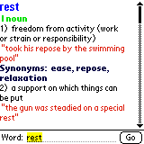
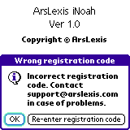
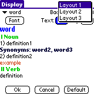

| |
Products | Downloads | Buy | Documentation | News | Support |
|
|
iNoah requires a Palm PDA with direct, wireless connection to the Internet.
Those models include (but are not limited to): Treo 600, Tungsten C,
Tungsten W, Clie PEG-TH55, Clie PEG-UX50, Kyocera QCP-7135,
Samsung SPH-i500, Treo 300, Treo 270.
iNoah is optimized for Treo 600 smartphone. |
| Download iNoah and install iNoah.prc on the device. |
| Upon startup iNoah displays About screen. Startup behavior can be modified in preferences. |
In order to get a definition of a word, type the word in the text box and press "Go" button (or center button on Treo's 5-Way Navigator). |
| 
iNoah will download word definition and display it. If a definition
doesn't fit on the screen, it can be scrolled using hardware up/down buttons,
scrollbar or 5-Way Navigator's up/down buttons (available e.g. on Treo 600
or Tungsten). You can scroll by a line, half a page or a whole page
(depending on preferences). |
| Tapping twice on the word brings its definition. |
Main menu options:
|
|
Unregistered version of iNoah limits how many definitions can be viewed in one day. In order to remove that limit, you need to purchase registration code (serial number). After purchasing iNoah, registration code is e-mailed to you. We strongly recommend saving it in a safe place for future reference. Use menu item 'Options/Register' to enter registration code. Press 'Later' to postpone registration process. Press 'Register' to verify registration code. Registration code consists of numbers only. |
|
 If the registration code is invalid, iNoah will show a dialog box informing about that. Press 'OK' to postpone registration process or 'Re-enter registration code' to correct the registration code. If the registration code is valid, iNoah shows a dialog box notifying about that. If you re-install iNoah, you'll have to re-enter registration code, so please keep it for future reference. |
 iNoah allows bookmarking words for future reference, deleting bookmarks and
selecting a word from the list of bookmarked words. When viewing bookmarks, they
can be sorted alphabetically (by name) or chronologically (by the time they were
bookmarked, the most recently bookmarked words at the top).
iNoah allows bookmarking words for future reference, deleting bookmarks and
selecting a word from the list of bookmarked words. When viewing bookmarks, they
can be sorted alphabetically (by name) or chronologically (by the time they were
bookmarked, the most recently bookmarked words at the top).
|
 It's possible to copy a part of definition to a clipboard and use it in
other application. To do that, select a part of definition to copy with
a stylus and select "Main\Copy to clipboard" menu item. If there
is no selection, the whole definition will be copied. You can then paste
copied text in other applications that support clipboard (e.g. Memo Pad).
It's possible to copy a part of definition to a clipboard and use it in
other application. To do that, select a part of definition to copy with
a stylus and select "Main\Copy to clipboard" menu item. If there
is no selection, the whole definition will be copied. You can then paste
copied text in other applications that support clipboard (e.g. Memo Pad).
|
Startup action preference defines what happens when iNoah
starts:
|
Up/Down buttons and 5-Way buttons preferences
define how a word definition will be scrolled when up/down buttons are used:
|
 You can customize the way iNoah displays definitions. There are 3 different layouts to choose from. Font and color of each part of the definition can be changed. |
|
To check if there's an updated version of iNoah,
select menu item 'Options/Check for updates'. If a web browser is installed
on the device, you'll be taken to a page showing if there's an update.
You can also use menu item 'Options/ArsLexis website' to visit a version of ArsLexis website optimized for viewing on Palm. You'll find there description of our software for Palm and links to direct downloads. |
On Treo iNoah supports 5-way navigator to enable one-hand use and
make some common tasks easier:
|
|
We strive to provide great support for our software. To obtain support please visit support page on our website. To provide feedback to our development team, suggest improvements, discuss ideas and exchange tips and tricks with other users, participate in our discussion group. |